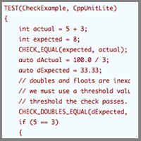

Lesson 1
 C++ I/O, Types, Declarations, and CppUnitLite
C++ History and Programming Paradigms
As a prelude to exploring C++, let's begin by briefly looking at some of the commonly used programming languages and see how they differ. For our first step, we conclude that paradigm is simply a cool word - much cooler than simply saying model. It sounds impressive and is fun to say - although not like it's spelled. That done, we can move to the task de jour - it ain't soup yet.
In the software world, we have data and the functions that operate on that data. We describe how we combine or group these two as a programming paradigm. Today, we can find several, including procedural, data-driven, functional, logical, object-based, and object-oriented. Let's spend some time looking at each.
Compatibility with C
Let's start with the procedural paradigm. With such an approach, we decide what procedures, or "algorithms" are required to solve our problem. Next, we decompose these large and complex algorithms down into smaller and more manageable pieces (often called modules); collectively, these pieces are our program. When we run the program, it will perform the specified operations (functions) on our data to determine the answer to the original problem. We see that the data and the functions that operate on those data have been combined as procedures. The familiar languages such as C, Basic, Pascal, Fortran, or Cobol are examples of procedural languages.
The Data-Driven Paradigm
In many cases, the types and structure of data from the problem domain, and relationships between them, are more important than the procedures or algorithms themselves. In this case, the data-driven paradigm is often a better approach. This realization spawned the proliferation of database management programs that are still the foundation of many computer systems. Databases come in many varieties, but today the relational database is by far the most common. Here the fundamental model is one of tables of data in which each row represents a unique instance of some entity characterized by values in columns of data that make up the row. Collection, storage, manipulation, and access to these data is performed by computer programs, or by procedures stored in the database itself. SQL is an example of a data-driven language.
The Functional Paradigm
is built as a composition of functions enclosed in a top-level function. A computation is the evaluation of the top level and, subsequently, the enclosed functions while avoiding state and mutable (data that can be changed) data (common in procedural languages, for example). Pure functional programs have no side effects; consequently, their application to data is independent of evaluation order. Because such functions do not modify shared variables, they can be executed in parallel without interference. Functional languages include LISP, APL, and Scheme. Functional languages can work well in multi-threaded programs.
The Logical Paradigm
Logical programs use logical expressions or statements for encapsulating the data and functions. These mathematical expressions are combined with proof procedures to define and then solve problems. As an example of such logical expressions, we can write the following problem or conjecture:
All men are honest.
Aristotle is a man.
Therefore, Aristotle is honest.
To prove the validity of such a set of statements (or, rather, to solve the problem of determining if Aristotle is honest), we begin by assuming that it is false. If we can show a contradiction, then the original conjecture (that the set of statements is false) must have been correct. The language Prolog is considered to implement the logical programming paradigm.
The Object-Based Paradigm
Some time in the late sixties and early seventies, computer scientists came up with the idea of putting some procedural intelligence together with the data describing a particular entity into something called an object. The formal term for wrapping data and functions together into an object is called encapsulation; it is the first of the big three object oriented (or OO) concepts (the others are inheritance and polymorphism - more about these later). Encapsulation helps software developers achieve something called data hiding - the notion that an object's data should only be manipulated by the object itself, and then only in clearly specified ways. With data hiding, when things go wrong and your credit card bill gets messed up, it's easy to decide who's to blame; it's that stupid object that has your name and purchase information encapsulated in it. Doesn't that make you feel better? I'm sure it makes the credit card company happy to know it's not their fault!
This idea of one thing having data (attributes), and functions (behaviors), allows us to make a pretty long leap. It allows us to look at a problem and use a process of abstraction to identify things from the problem we would like to treat as independent, active, entities in our program. It allows us to specify what we want those things to be able to do, and to give them all the data and processes they need to do what we want. It also allows us to endow things in our program with an intelligence that they don't have in the real-world problem domain. For example, in the real world of the billing department, invoices don't know how to assemble, validate, and print themselves. In the world of objects, it is entirely reasonable to expect them to do so
The Object-Oriented Paradigm
The difference, at least in the name, between object-based and object-oriented, seems small. In fact, the difference is profound. With object-based programs, what we have is a sort of data on steroids, encapsulated together with some handy procedures for manipulating the data. Object-oriented programming adds two crucially important concepts and capabilities: inheritance and polymorphism
Summary
We'll explore development paradigms more later in the class when we design are programs. Particularly when we start defining our own types using C++ classes.
Automated testing with CppUnitLite
Every programming assignment you complete must provide automated unit tests using CppUnitLite. CppUnitLite is a simple yet powerful unit testing framework for C++. Download CppUnitLite from the main C++ Progamming class page. We may ask, why do we need to use CppUnitLite? There are a number of answers
How do you know your code works correctly? Many developers use a combination of trace statements and manual tests to verify new code works correctly. I'll argue that a better way is to write automated tests that not only document correct behavior but can be run later as regression tests to verify correct behavior after any code modification.
How do you know the code you developed and manually tested last week, works this week after you add new functionality? Do you rerun the manual tests from the previous development. How do you know what these manual tests were? What if another developer makes changes?
Another benefit of automated unit tests is they provide documentation of the intended usage of the code under test. Developers can read the unit tests to learn explicit and implicit requirements of the code as well as learn how to use the code.
How do you know if you are writing unit tests correctly? One of the qualitative metrics I use is whether I can grade most (if not all) of your assignment by reading the unit test code. I should be able to see your code implementations in use and see that they work correctly by reviewing the test checks.
I recommend you write your tests before you write your implementation code. There is something about this process of writing the tests first that provides a number of benefits. You start looking at the API design from the perspective of the user of the API - this leads to a better API design. Right away, you write code that can be tested. Most development teams have a goal to write testable code. But often the code is designed and written to be testable, then the tests are (sometimes) added after the development work. This is when you find that the implemented code does not allow for automated unit testing. At this point it is too late to fix the code for testing.
Another type of test that is often neglected is extremely easy to do within a unit test. This is testing boundary conditions. We most always remember to test the mainline data and usage scenarios. This is what is mostly tested for in manual verification tests. Now, within your unit tests stress your code. What happens when inputs are at the boundary of a valid input? If a function takes a pointer as input, what happens if nullptr, NULL or 0 is passed? What happens if the input is outside the boundary? Does your design make it easy to know when a boundary condition has been violated?
It will take some practice to develop this skill of writing unit tests. We will work on this together throughout the class. Many of the code examples provided for the course will be in the format of a CppUnitLite unit test.
CppUnitLite comes with a number of source files. You may use CppUnitLite in your assignments in a couple different ways.
- Copy the CppUnitLite source code into each assignment project. Compile and run the new code you write for the assignment with the CppUnitLite code. This is how I will provide assignment solutions as everything needed to compile the assignment is grouped together.
- Copy the CppUnitLite source into a single project. Compile the code into a LIB or DLL. Link to CppUnitLite library from your assignment projects. This is the method you would use on a production project as you would not mix the test code with the production code.
When you look at the CppUnitLite source files you will notice a number of source files. You will not modify any of the files except the file with the name of XxxTest.cpp. This is the file in which you will create your tests. Rename Xxx to the capability being tested. For example, if you are testing stringstream, rename XxxTest.cpp to StringStreamTest.cpp. Inside XxxTest.cpp you will note the following code:
#include "TestHarness.h"
// include the header file for the class you are testing.
// each test function should be small and test a single capability
// replace testName with the name of the particular test. Replace ClassName with
// the name of the class being tested
TEST(testName, ClassName)
{
CHECK(1 == 1);
}
To write your first test, #include the .h files required to access the capability under test. In the TEST replace testName with the specific capability being tested, and replace ClassName with the general name of the capability under test. Write the code inside TEST that exercises the capability. There are a number of checks you can perform to validate the results. See the following TEST for examples of each:
#include "TestHarness.h"
TEST(CheckExample, CppUnitLite)
{
int actual = 5 + 3;
int expected = 8;
CHECK_EQUAL(expected, actual);
auto dActual = 100.0 / 3;
auto dExpected = 33.33;
// doubles and floats are inexact numeric representations. To check equality
// we must use a threshold value. If the values are equal within the range of the
// threshold the check passes.
CHECK_DOUBLES_EQUAL(dExpected, dActual, 0.01);
if (5 == 3)
{
// Use CHECK_FAIL when the test control flow gets to a statement
// that is invalid
CHECK_FAIL("5 does not equal 3");
}
// Use CHECK for validation checks that don't verify equality.
std::string name("Scott Meyer");
CHECK(!name.empty());
// Use CHECK_EQUAL to compare strings
std::string sActual("Hello");
std::string sExpected("Hello");
CHECK_EQUAL(sExpected, sActual);
}
Remember to keep each test small and focused. It is better to write more smaller tests than fewer larger tests.
If you are testing a number of different general capabilities, create new XxxTest.cpp files, one for each general capability.
If you are intested in researching this topic more do a web search of Test Driven Development
Code Standards and Styles
You are not required to use a particular coding style in the course. But you must select your own style and consistently use your style throughout your assignment code. Style includes such items as:
- Curly brace style
- Identifier naming style (e.g., camel casing or pascal casing)
- Indentation style
Regardless of what style you choose - neatness counts. Your code must be nicely and consistently formatted and use the same style throughout. A good choice would be to use the same style as Stroustrup does in "The C++ Programming Language".
C++ Types and Declarations
Read the chapter on Types and Declarations from Stroustrup's book "The C++ Programming language for a full explanation of C++ Types and Declarations.
Shifting from C to C++
C++ Comments
Although the C-style comment delimiters /* and */ still work, in C++ we can also use two forward slashes, //, to identify single-line comments. Any text following the two forward slashes on a line is treated as comment.
const and const variables
The const specifier is now a part of ANSI C, where it is used to declare or specify a constant. As we'll see, its use in C++ is much richer. In C, it's intended as a replacement for the #define statement. The major advantage of such a replacement is that #define statements are handled by the preprocessor - there is no type checking. The const specifier is interpreted by the compiler with all of the associated benefits of type checking and optimization.
The const semantics give the programmer the means to specify that a particular object should not be changed. It provides the means to state explicitly to other programmers that a value should remain constant. The compiler will enforce the specified constraint. A const is declared and initialized in a single place. We must always assign a value at the time of definition.
The declaration
const int speed = 60;
creates the symbolic constant speed. Now, after this declaration writing
speed = 70;
is illegal.
const pointers
When we use const with a pointer, we have three alternative interpretations based upon placement of the keyword:
- The pointer is
const. Value of the pointer cannot be changed. The pointer must be initialized at the time of declaration. - The item pointed to is
const. Value of the object cannot be changed. - Both are
const.
{
char hello[256] = "hello";
char* p = hello;
// p is not const in any way thus
p[0] = 'a'; // can change data being pointed at
char goodbye[256] = "goodbye";
p = goodbye; // can change to point at different data
const char* q = hello;
// q is const in that we can't modify the data being pointed at
q[0] = 'r'; // illegal
q = goodbye; // can change q to point at different data
char* const r = hello;
r[0] = 'x'; // fine - we can change the data being pointed at
// r is const in that we can't change it to point at different data
r = goodbye; // illegal - can't change what is being pointed at
// s is const in both pointer senses - can't change what is being pointed at and can't
// change to point to something else
const char* const s = hello;
s[0] = 'l'; // illegal
s = goodbye; // illegal
}
When working with const and pointers, we can initialize a pointer to const with the address of a non-const object. The assignment states that we will not change an object that can legally change. We cannot assign the address of a const object to a pointer to a non-const object. The object may be changed through the pointer. We can cast the address of a const object to a pointer to a non-const object, but this can be dangerous: it's defeating the intent of the const.
const int a = 8; int* aPtr = &a; // illegal
Declarations within blocks
In C++, we can declare variables anywhere within a code block. This enhancement allows us to make declarations closer to where they'll actually be used. Such local declarations help to reduce the chance of errors.
int main ()
{
int a;
...
code
int b;
more code (using b)
char* c;
yet more code (using c)
}
Local declarations also permit us to declare variables within a loop rather than at the top of a block.
// Each i is in the same scope as its for loop
// The following declarations are equivalent to
// int i = 0;
// for (int i = 0; i < 10; i++)
// {
for (int i = 0; i < 10; i++)
{
for (int i = 4; i < 25; i++)
{
...
}
// i from inner loop
}
i from outer loop
...
for (int i = 0; i >20; i--)
{
}
Once a variable is declared, a second declaration at the same scope is an error. Although code such as that used in the previous example is legal, its use is highly discouraged. Local declarations are fine; just select a different and meaningful name for each variable. Examples as shown lead to errors and bugs that are difficult to find. Make things clear and obvious.
Use const and inline rather than #define
In C it is common to create and use C preprocessor macros for symbolic constants (i.e., #define). One of the problems with preprocessor macros is they are processed out of the source file before the compiler can see them. This can cause hard to solve source code compilations problems. Also, many debuggers are unable to see the symbolic constants defined via C macros. In C++ use const to define symbolic constants:
#define PI 3.14149 // retire this approach
const double PI = 3.14159; // use this technique to define constants in C++
Use <iostream> rather than <stdio.h>
The C++ standard library provides an object oriented interface to I/O. C++ I/O is provided by the declarations in <iostream> and is built around the idea of streaming data to an output device and from an input device. Streaming is better than the C I/O provided in <stdio.h> because it is easier to use correctly.
Retire the <stdio.h> I/O functions and instead use the streaming functions in <iostream>.
Use new and delete instead of malloc and free
In C++ we have two choices to allocate dynamic memory. We can use a function from the C memory allocation family (i.e., malloc, calloc, and realloc) or we can use the C++ new operator. New has advantages over malloc and its siblings. When allocating memory for objects new will call the object constructor, malloc will not. New will also throw an exception if memory allocation fails. This makes memory allocation error detection code simpler and more robust. (We will cover the exceptions in C++ intermediate). When we allocate memory with new, we must deallocate it with delete. When we allocate memory with malloc, we must deallocate it with free. We cannot mix new with free or malloc with delete.
Retire malloc and free and instead use new and delete.
The new Operator
usage: new type; // where type is the desired data type such as float, int, char, double
On success new returns a valid address. The memory is not initialized. Later when we cover classes (i.e., user defined types) we'll learn that new does call the class constructor. If new fails, it throws an exception. We'll cover exceptions later in the course.
usage: new type(aValue)
Initializes the allocated storage to the value aValue. We cannot initialize an array or aggregate type such as a struct.
usage for arrays: new type[anAmount]
Allocate storage sufficient to hold anAmount instances of the specifiedtype.
To allocate sufficient storage to hold a single integer and assign the pointer to the storage to myPtr:
int* myPtr = new int;
To return the address of of the first element from an area of memory large enough to hold 35 integers:
char* myPtr = new char[35];
To the address of a newly allocated int initialized to 33:
new int(33);
The delete Operator
The delete operator destroys an object created by new and has a return type of void. The syntax is as follows:
delete expression delete [] expression
In both cases, expression must be a pointer to memory allocated by new. The second syntax is specified to deleting array type structures. Do not use delete without the [] to free an array as the memory will not be correctly deallocated.
The following applications of delete are undefined:
- applying the
deleteoperator to an object not created bynew; - deleting a single object with
delete[]; - deleting an array with
delete; - the result of accessing a deleted object; and
- the result of applying
deletemore than once to the same object.
In the following code we exercise new and delete:
const int* aPtr = new int[1024]; delete aPtr; // error - need to use delete []
If you allocate with new[], you must delete it with delete[].
We'll develop our usage of new and delete to greater depth in the next several lessons and throughout each of the courses that follow this one. For now, let's see how we can use them.
#include <iostream>
using namespace std;
int main()
{
const int maxMeas = 100;
double* theMeasurements = new double[maxMeas];
// initialize array
for (int i = 0; i < maxMeas; ++i)
{
theMeasurements[i] = i;
}
delete [] theMeasurements;
}
In practice we will not often need to new and delete memory for arrays. Instead we will use std::vector (see the rule below) instead of built in arrays. std::vector will perform the memory allocation and deallocation for us.
Use <string> instead of <string.h>
Use std::string and retire arrays of char, strcpy, strcmp and the other C string functions
The C++ std::string is easier and safer to use than C style arrays of char. If you have a function that requires you to pass a const (i.e., read-only) you can still use std::string. To pass the string to the function as a char* use the handy std::string member function c_str(). This provides const access to the contents of the std::string as a char*.
TEST(practice, string)
{
std::string name("Bjarne Stroustrup");
CHECK_EQUAL("Bjarne Stroustrup", name);
// Use .c_str() to pass std::string to legacy functions
// Note: retire use of strcmp - its only used for illustration
// Use std::string equality operator (i.e., ==)
CHECK_EQUAL(0, strcmp("Bjarne Stroustrup", name.c_str()));
// Illustrate use of string equality
CHECK("Bjarne Stroustrup" == name);
}
Deducing a type: auto
C++ provides the keyword auto to deduce an object type from its initializer.
TEST(auto, cplusplus)
{
int i = 5;
float f = 45.6f; // the f suffix denotes a literal float constant
double d = 56.4; // no suffix denotes a literal double constant
auto ai = 5;
auto af = 45.6f;
auto ad = 56.4;
CHECK_EQUAL(i, ai);
CHECK_DOUBLES_EQUAL(f, af, 0.01);
CHECK_DOUBLES_EQUAL(d, ad, 0.01);
}
If a variable is not initialized at declaration, then auto can not be used.
Use std::vector instead of built in arrays
The C++ std::vector is easier and safer to use than built in arrays. Here is a short example of std::vector.
TEST(addingElements, vector)
{
// a vector is a C++ template. That means we need to tell it the type of element (e.g., int, double, float ...). We do that be providing
// the type in angle brackets. You will learn more about templates later in the certificate program.
//
std::vector values; // a vector can contain items of any type. Here we specify the elements are int.
values.push_back(45); // add an element to the vector
values.push_back(44); // add an element to the vector
values.push_back(43); // add an element to the vector
values.push_back(42); // add an element to the vector
CHECK_EQUAL(4, values.size());
CHECK_EQUAL(45, values[0]);
}
TEST(initializerList, vector)
{
// we can initialize container types (e.g., array, vector, other collections you will learn about later)
// with an initializer list
std::vector values = { 45, 44, 43, 42 };
CHECK_EQUAL(4, values.size());
CHECK_EQUAL(45, values[0]);
}
TEST(conventionalLoop, vector)
{
std::vector values = { 45, 44, 43, 42 };
CHECK_EQUAL(4, values.size());
CHECK_EQUAL(45, values[0]);
// loop through the elements
// std::vector::size_type the type used to store the size of the vector.
std::stringstream actual;
for (std::vector::size_type i = 0; i < values.size(); ++i)
{
actual << values[i] << " ";
}
CHECK_EQUAL("45 44 43 42 ", actual.str());
}
TEST(iteratorLoop, vector)
{
std::vector values = { 45, 44, 43, 42 };
CHECK_EQUAL(4, values.size());
CHECK_EQUAL(45, values[0]);
// loop through the elements
// Use iterators - an iterator has two main responsibilities
// 1) You can access an element in the vector via the iterator
// 2) You can increment the iterator to the next element
std::stringstream actual;
for (std::vector::iterator element = values.begin(); element != values.end(); ++element) // ++element increments the iterator to the next element
{
actual << *element << " "; // dereference the iterator to get the current element value
}
CHECK_EQUAL("45 44 43 42 ", actual.str());
}
TEST(iteratorLoopWithAuto, vector)
{
std::vector values = { 45, 44, 43, 42 };
CHECK_EQUAL(4, values.size());
CHECK_EQUAL(45, values[0]);
// We can simplify the declaration of the iterator using auto. The compiler will determine the type based on the inital value.
// In this case that the type of values.begin().
std::stringstream actual;
for (auto element = values.begin(); element != values.end(); ++element) // ++element increments the iterator to the next element
{
actual << *element << " "; // dereference the iterator to get the current element value
}
CHECK_EQUAL("45 44 43 42 ", actual.str());
}
TEST(iteratorWithRangedBasedForLoop, vector)
{
std::vector values = { 45, 44, 43, 42 };
CHECK_EQUAL(4, values.size());
CHECK_EQUAL(45, values[0]);
// we can also loop through every element using the ranged base for loop. This is preferred when looping through
// every element
std::stringstream actual;
for (auto value : values)
{
actual << value << " ";
}
CHECK_EQUAL("45 44 43 42 ", actual.str());
}
We will cover std::vector more in later lessons.
Use stringstream instead of atoi and sprintf
In C++ we have the <sstream> header file. <sstream> provides streaming functions to and from strings. These streaming functions provide the same function as atoi and its family of functions from the C standard library. That is, they convert data to or from a type such as int to or from a string. <sstream> provides std::stringstream to perform these conversions. stringstream makes it easy to convert to or from the correct type. stringstream also provides an easy method to find if a conversion worked.
Here is an example that shows how to convert an int to a string as well as convert a string to an int. Note the use of CppUnitLite unit test to verify the behavior.
#include "TestHarness.h"
#include <iostream>
TEST(toInt, stringstream)
{
std::stringstream sValue("34");
int value;
// an example of streaming. The C++ operator >> is used to stream from
// a stream source to a type.
sValue >> value;
// apply the not operator "!" to the stringstream after the conversion
// attempt. It will return true if the conversion failed.
if (!sValue)
{
CHECK_FAIL("conversion failed");
}
CHECK_EQUAL(34, value);
}
TEST(fromInt, stringstream)
{
std::stringstream sValue;
// an example of streaming. The C++ operator << is used to stream to
// a stream destination from a type.
sValue << 55;
// apply the not operator "!" to the stringstream after the conversion
// attempt. It will return true if the conversion failed.
if (!sValue)
{
CHECK_FAIL("conversion failed");
}
// .str() returns the content of the stringstream as a std::string
CHECK_EQUAL("55", sValue.str());
}